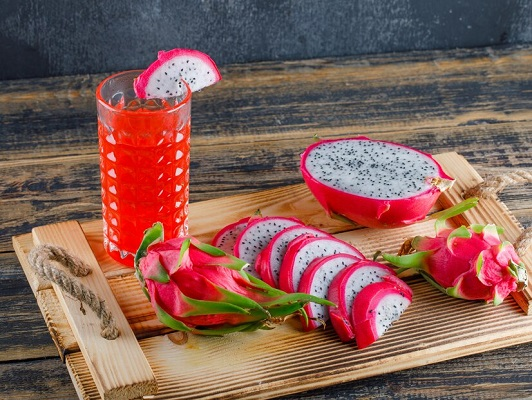

| ડ્રેગન ફ્રુટ જ્યૂસના 5 સ્વાસ્થ્ય લાભો |
| કેન્સરના જોખમો ઘટાડે છે. |
| રોગપ્રતિકારક શક્તિ વધારવામાં મદદ કરે છે. |
| હૃદય માટે સારું. |
| સ્વસ્થ હાડકાં. |
| વાળ માટે સારું. |
|
|
- 1/4 ડ્રેગન ફ્રુટ
- 3 ચમચી દાડમ ના દાણા
- ચુટકી સંચર મીઠુ
- 4 ચમચી દળેલી ખાડં
|
|
- ડ્રેગન ફ્રુટ,મીઠુ ખાડં નાખી ને ગ્રાઈન્ડર મા ક્રશ કરી લેવાના અને એક બાઉલ મા કાઢી લેવાના તમે ગઢણી થી ગાળી ને સર્વ કરી શકો છો મે નથી ગાળયા
- જરુરત પ્રમાણે પાણી અને બર્ફ ઉમેરી ને ગિલાસ મા સર્વ કરવુ મે ગિલાસ ની ઉપરી ધાર ને ખાડં થી ગાર્નીશ કરી છે.